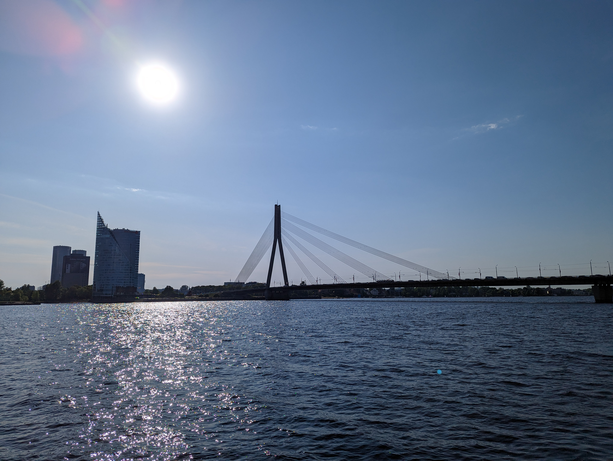

A bridge to nowhere
My path begins with the "Bridge to Nowhere", which has become a prominent symbol of Riga's infrastructure growth. This place has become a popular attraction, not only among Instagrammers and tiktokers, but also among local residents. Although I have not yet climbed this monument, I can't help but wake up from the interest it creates when I drive by everyday. Looking at it, there is a sense of pride in seeing our city develop and grow. However, at the same time, it also makes me feel sad because I drove into a regular pothole that could have been patched using the funds that were invested in the construction of this bridge. Thus, it becomes both a beauty and a reminder of unfulfilled infrastructure improvement plans.

The Vanšu bridge
I associate this place most with the beautiful view over the Daugava. Every morning, regardless of whether I ride a bike or a car, I drive into the same pothole that has not been repaired for years. Although the ascent above the Daugava is pleasant, the "temporary" barriers on the footpath slightly obstruct the view. However, turning to the breezy wind that blows and reminds of strong sea waves, there is a peculiar and alive feeling. This contrast between the fascinating view and the lack of infrastructure gives the place a diverse character. It is a call to rethink and improve the bridge, providing a safe and smooth way across the Daugava to fully enjoy this daily experience. The bridge could also include environmental features such as flower beds and seating that would encourage leisure and attract more people. Thus, this place would become a pleasant and attractive place of recreation for both local residents and tourists. Ideally, the bridge would also have dedicated green energy production systems that would promote environmentally friendly energy use and help reduce CO2 emissions. Thus, by significantly improving the infrastructure, we could make this place even more attractive and in line with the principles of nature conservation.

Riga Castle

I look at this place every day while driving over the Vanšu Bridge. It is nice to see how clean its territory is, but at the same time, outside it is quite polluted with the waste of Old Riga hangouts. Every weekday morning, you can look at people sitting with their cars in traffic jams and crashing them into regular potholes. It makes you wonder if there are other modes of transport that would be more environmentally friendly and reduce traffic in this area. At the same time, looking at the head of the Daugava, you can observe various water vessels moving along the river, giving another dimension to this landscape. This creates an opportunity to use the Daugava not only as a transport route, but also as a tourism and recreation resource. Maybe this place could become a popular route for cyclists, where they could enjoy both the beautiful view and active time in nature.
Bastejkalns Park

In my opinion, the most pleasant place in Riga is relatively quiet and peaceful, except for the loud BMWs that crash forward with their "straight exhausts". It is very nice to see someone walking their dog or someone else reading a book outdoors in the sun. This place is always associated with the presence of the University of Latvia, where smiling lecturers are always waiting for us. In the morning you can hear the traffic of students as they rush to lectures, but in the afternoon the place becomes calm and an invitation to enjoy the atmosphere of the city with other residents. In this place, you can feel the wind of Riga flowing through people's life and cultural diversity. It is like a microcosm where different worlds meet - students, residents, tourists. It is a place where everyone can feel part of the joy of the big city, being simply the silence that dwells between all the loud and fast moments.
The Freedom monument

The Freedom monument is a very nice place. It always reminds us of Latvia's freedom fighters. It is important to take care of this place, maintain it and not let any stranger take it away from us! I believe that the project "Shine like a star!" by Kārlis Saale! has been very successful and for every Latvian, tourist or anyone else, this place makes the eyes shine. The monument is not only symbolic, but also visually exciting, as if stars decorate the air of Latvia. Its fine detail work and beauty give the place a special atmosphere. Here, around the parking lot, you can feel solemn and proud of Latvia's history and freedom. It is like a mirror of Latvianness that reminds us of respect, honor and independence. I assume that many come here to look back at the monument with pride and deep gratitude to those who fought for our country.
University of Latvia

And here we are - at the University of Latvia. This is the place where young people and everyone who wants to learn and grow as a person climb their career ladder. It is nice to meet both inspiring instructors who are eager to share their knowledge, and also to meet different perspectives and talented colleagues. For me, the University of Latvia is associated with a deep exchange of thoughts, a critical mind that increases ideas, as well as a deep immersion in the study of matters and the acquisition of knowledge. When arriving here, the main thing is not to forget to use only the side stairs near the main door, in the worst case - to use the window, as a symbolic path to wisdom and revelations. Of course, it's not always as good as it sounds, sometimes it's cold here, the windows blow, but that's why we try to overcome obstacles and go towards opportunities for knowledge and growth. That is why, without a doubt, the University of Latvia is a part of us, which adds new knowledge to us every day and promotes our personal development.